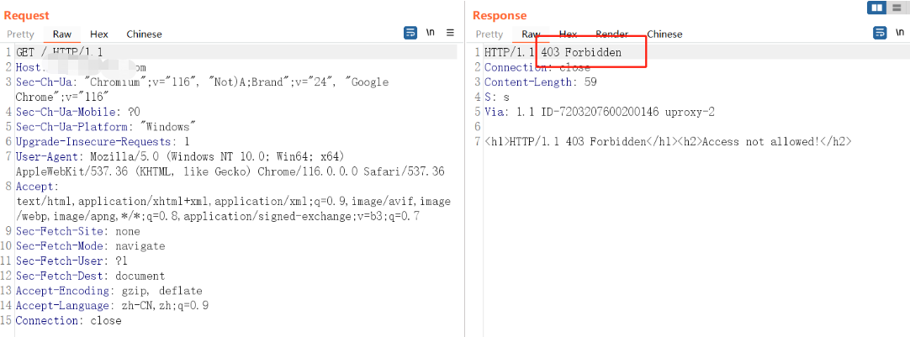

内部泄露文件
- 网盘搜索
- 种子搜索
- wiki/文库/知识库搜索
- QQ群、微信群、企业微信群、钉钉群、飞书群群文件
历史信息泄露
- 历史漏洞，历史漏洞报告
- 历史网页被waybackmachine抓取
- 历史网页快照被搜索引擎缓存
- 社工库信息泄露
代码托管平台
github
工具
https://github.com/damit5/gitdorks_go使用
./gitdorks_go_amd_linux -gd Dorks/smalldorks.txt -nws 20 -target gm7.org -tf tokenFile/tf.txt -ew 3./tokenFile/tf.txt→Github access token../Dorks/smalldorks.txt→关键字字典GitLab: https://about.gitlab.com/
- gitee: https://gitee.com/
社工信息收集
人员基本信息
- 身份信息（姓名、性别、大概年龄）
- 单位职位
- 日常工作
- 岗位对外联系的主要内容
- 岗位对内联系的主要内容
- 是否掌握计算机基础
- 系统版本（Windows、Mac的常用版本）
- 软件安全情况（安全意识、浏览器版本、office版本）
单位基本信息
- 内部员工的互相称呼
- 老师、同学、哥、师傅
- 工作流
- 沟通软件、沟通方式，邮件、OA、微信、企业微信、钉钉、QQ等
- 运维策略
- 企业杀软有无和其类型
- 安全人员素质、是否出网、是否允许安装软件
- 办公方式（平台：PC、云桌面、标装机）
主动类
目录/文件扫描
关于目录
当目录存在时会自动在目录后加上/，如访问/admin后url会自动在其后增加/，即变为/admin/
逐级Fuzz
Nginx反代问题（一个目录对应一个web服务）
关于文件
- 备份文件扫描
- 中间件，框架，后端语言对应扫描
- webshell扫描
TIPS：
a.php文件存在，针对文件名进行fuzz扫描
多个域名进行备份文件扫描
域名的一部分，公司名称的缩写，目录名（目录为/cn，备份文件为/cn/cn.rar）

目录可能为域名的一部分，公司的缩写，系统名称的缩写等
403bypass
Spring，Shiro权限绕过
0x727/BypassPro: 对权限绕过自动化bypass的burpsuite插件 (github.com)
403 /actuator/heapdump 200 /actuator/heapdump;.js 403 /actuator/httptrace 200 /actuator/httptrace/# (burp抓包改)还有其他特殊情况
404 /sys/actuator 200 /sys/..;/actuator 200 /sys/;/actuator很多时候访问actuator，不会显示端点，但是访问具体的端点是可以访问到的，这个时候可以访问mappings端点来查看存在哪些端点
burpfakeIP


JS中的信息
可能泄露接口，后台地址，密码等敏感信息
- 浏览器插件被动收集
- Burp被动收集
报错信息
报错信息中通常有web服务器的各种信息，如物理路径，组件信息，主机系统等
相关关键词/语法
关键词
# 企业敏感信息
手机号 | 合同 | 名单 | 口令 | 隐私数据 | 内部 | 账号 | 通讯录 | 花名册 | 报表 | 投标文件 | 入职 | 设计图纸 | 简历 | 招标 | 密码 | 默认
# 后台
管理|后台|登陆|平台|系统
login|admin|manage|manager|admin_login|system
# EDU
https://blog.csdn.net/qq_29437513/article/details/124328269
关键词:银行卡|录取|申请|退伍|宿舍|图书，学生，教师，补助，免试，破格，团员，入党，积极分子
# js寻找接口
path:
url:
get(
post(
# 接口
get
list
upload
download
exec
search
encrypt
decrypt
token
Google语法
常用语法
# 逻辑运算符
OR AND
# 域名
site:xxx.com
# ip段
site:1.1.1.*
# 双引号包围必须出现xxx
"xxx"
# 搜索网站正文内容
intext "版权所有：萍乡市自然资源和规划局"
intext:"赣ICP备15000724号"
# 搜索缓存内容
cache:
# 搜索url
inurl:
upload
download
?id=
?path=
.php
.asp
.aspx
.jsp
# 过滤内容
-xxx
空间搜索引擎
title="Directory listing for /"
title="index of/"
title="phpinfo"
tile="outlook" / "tomcat" / "weblogic" # 查找特定应用
(title="平台"||title="管理"||title="系统"||title="后台"||title="登录")
server="WebSockify Python" && title="Directory listing for /" # 查找novnc（novnc运行在容器里）
header=xxx # 请求头 感觉hunter的多
Hunter
(icp.name="银行"||icp.name="信用合作联社"||icp.name="信用社联合社")
(icp.name="信托有限"||icp.name="财务有限"||icp.name="理财有限")
(icp.name="天然气集团"||icp.name="核工业集团"||icp.name="国家电网"||icp.name="石油化工"||icp.name="能源集团")
app.name=="Vue.js"&&(icp.name="银行")&&(title="平台"||title="管理"||title="系统"||title="后台"||title="登录")
city="新余"&&(title="智慧"||title="政府"||title="大数据"||title="智能")
icp.industry="货币金融服务"
ip.province="江苏" 搜索IP对应主机在江苏省的资产
ip.country="CN" 中国资产（空间搜索引擎搜到的国外的都是bc，狠狠地污染）
Fofa
cert=英文缩写 # 证书内容
cert.subject=英文缩写 # 证书持有者
cert.issuer=英文缩写 # 证书颁发者
org="China Education and Research Network Center" #教育网段
零零信安
Linux命令
Winodws下可以装个wls2
尴尬点😅
wsl2需要开启hyper-V，但是安卓模拟器又要关闭hyper-v，而且VM15.5以下的版本也需要关闭hyper-V。
虚拟化技术：https://yanglei253.github.io/2021/01/05/docker/docker1-virtualization/
# 关闭hyper-V后重新开启wsl # 开启hyper-V dism.exe /Online /Enable-Feature /All /FeatureName:Microsoft-Hyper-V # 开启wsl支持 Enable-WindowsOptionalFeature -Online -FeatureName Microsoft-Windows-Subsystem-Linux
图标哈希指纹提取
curl https://hunter.qianxin.com/favicon.ico | md5sum # hunter web.icon="md5" # 360 favicon:"MD5"敏感信息查找
整合成sh脚本，一键提取
提取Nginx日志文件中的200
grep -EHirn "HTTP/1.1\" 200" wxtest.zyxt.com.cn | cut -d ':' -f 2- > 200.txt提取ip和url
grep -E "([0-9]{1,3}[\.]){3}[0-9]{1,3}" -r 1--color=auto 提取IP grep -E "https?://[a-zA-Z0-9\.\/_&=@$%?~#-]*" -r 1 --color=auto 提取域名 grep -EHirn "http://|https://" 200.txt | cut -d ':' -f 2- > url.txt提取账密
grep -EHirn "username|password|密码|credentials|passwd|pass|testuser|user|pwd|dbuser|token|jdbc|admin|login|sa|root" 200.txt | cut -d ':' -f 2- > pass.txt提取各种key
grep -EHirn "ak|密钥|accesskey|apikey|key|secret|corpid|corpsecret|cloud|oss" 200.txt | cut -d ':' -f 2- > key.txt提取文件下载
grep -EHirn "\?file|download|attachment" | cut -d ':' -f 2- > FileDownload.txt提取个人敏感信息
grep -EHirn "phone|mobile|card|real_name|\.png|\.jpg|\.mp4" | cut -d ':' -f 2- > LeakInfo.txt
文件下载
# 目录遍历漏洞，目录名默认为host wget -r --no-pare url /mnt/c/Users/khaz/Downloads # 批量下载,比如存储桶遍历 wget -i urls.txt -P Download/文本类
cat file1.txt file2.txt fileN.txt > out.txt # 文本合并 sort 1pass.txt | uniq > 1pass.txt.tmp && mv 1pass.txt.tmp 1pass.txt # 排序+去重javaweb查找数据库配置文件
find 路径 -type f |xargs grep "com.mysql.jdbc.Driver"